Installare il programma, configurarlo con la configurazione guidata, lavorarci ogni giorno, usare la cassa, collegare le postazioni, fare i backup e gestire la licenza.
TD Booking Suite gestisce prenotazioni, agenda e clienti. Si installa con un solo file MSI e i dati restano sul PC, in ufficio: non passano da server esterni.
Tre modi di installarlo
Tipo
Quando
Cosa fa
Un PC solo
Un'attività con un solo computer.
Programma e dati sullo stesso PC. Risponde solo a quel PC: niente altri computer, telefoni o prenotazioni dal sito. Si entra con username e password.
Server con postazioni
Un ufficio con più computer, tablet o telefoni.
Questo PC tiene i dati e resta acceso. Gli altri PC con la postazione, i telefoni dell'ufficio e, se lo metti online, il sito si collegano a lui. Sul server si usa anche il programma.
Solo postazione
Ogni altro PC dell'ufficio.
Solo la finestra del programma, che si collega a un server già installato o a TD Booking Suite su Internet.
Due account, oppure uno
Amministratore del programma
Si crea al primo avvio. Configura licenza, backup, attività e, sul server, postazioni e rete. Da solo non vede agenda e clienti.
Titolare
Lavora nell'attività: agenda, prenotazioni, clienti, servizi, orari, il suo logo. Le altre persone le aggiunge l'amministratore del programma.
Se il programma lo usi tu, nella configurazione guidata scegli Io, con questo account: un solo account configura e lavora. Se lo installi per un cliente, scegli Il titolare, con un suo account.
La licenza
Senza licenza si attiva una prova di 7 giorni, con un'attività e due postazioni. La licenza dice il tipo (Un PC solo, Server con postazioni, Portale con più attività), quante postazioni in rete si usano e se scade. Vale per un'installazione precisa, riconosciuta dal suo codice installazione.
2Prima di installare
Cosa serve
Windows 10 o 11 a 64 bit, con un account amministratore di Windows per installare.
Sul PC che tiene i dati: almeno 4 GB di RAM e qualche GB libero. Con Server con postazioni deve restare acceso mentre si lavora.
Microsoft Edge WebView2, già presente in Windows 11 e nei Windows 10 aggiornati. Se manca, il programma lo dice e porta alla pagina per scaricarlo.
Windows segnala il file: si installa lo stesso
Il file MSI non ha ancora una firma digitale: Windows non riconosce chi lo pubblica e lo segnala, anche se il file è a posto.
Edge o Chrome dicono che il file non viene scaricato comunemente: apri il menu … del download, poi Mantieni, Mostra altro e Mantieni comunque.
Windows ha protetto il PC, la finestra blu, compare al doppio clic: premi Ulteriori informazioni e poi Esegui comunque.
Se il file arriva da una chiavetta o da una email e non parte: tasto destro, Proprietà, spunta Sblocca in basso, OK.
3Installare
Doppio clic sull'MSI, poi Avanti. Accetta la licenza d'uso e premi Avanti.
Alla domanda Come userai TD Booking Suite su questo PC? scegli il tipo: Un PC solo, Server con postazioni o Solo postazione (sono spiegati nel capitolo 1). La scelta si cambia dopo, aprendo di nuovo l'installazione: i dati restano.
Premi Installa e dai il permesso di amministratore. La prima volta servono un paio di minuti: l'installer prepara il database e i servizi di Windows.
Alla fine lascia spuntato Apri TD Booking Suite, oppure usa l'icona sul desktop.
Sul PC con il server la finestra non fa domandeCon Un PC solo e con Server con postazioni la finestra apre da sola il programma installato su quel PC, già verificato. Indirizzo e impronta del certificato li chiede solo una postazione (capitolo 9).
4Primo avvio
La prima volta il programma chiede di creare l'amministratore del programma. Si fa solo dal PC dove c'è il server, e solo finché un amministratore non esiste.
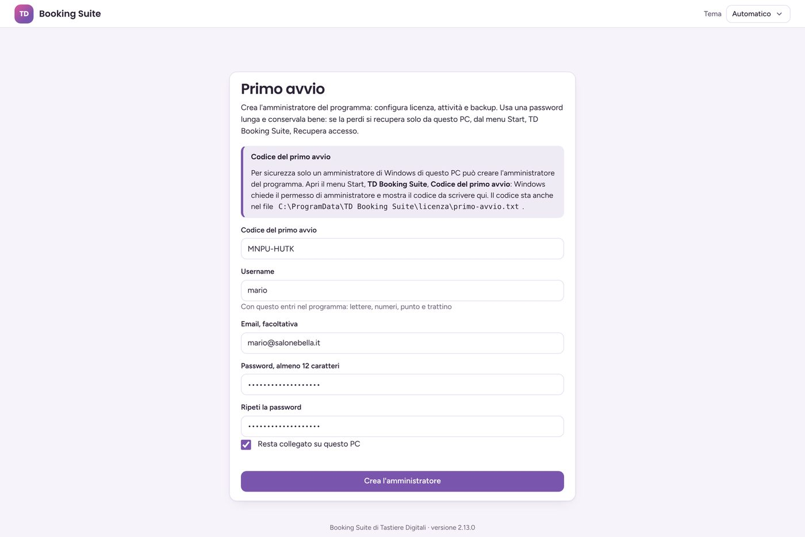
Primo avvio: il codice, lo username, l'email facoltativa e la password.
Codice del primo avvio: apri il menu Start, TD Booking Suite, Codice del primo avvio. Windows chiede il permesso di amministratore e mostra il codice: scrivilo nella pagina. Serve perché un altro utente di Windows dello stesso PC non crei l'amministratore al posto tuo.
Username: con questo entri nel programma. Lettere, numeri, punto e trattino, da 3 a 40 caratteri, per esempio mario.
Email, facoltativa: se la metti puoi entrare anche con quella.
Password di almeno 12 caratteri, due volte. Conservala bene: se la perdi si recupera solo da questo PC (capitolo 13).
Resta collegato su questo PC, già spuntato: alla prossima apertura entri senza scrivere niente.
Premi Crea l'amministratore: sei già dentro e si apre la configurazione guidata.
5Configurazione guidata
Pochi passi, ognuno dice se è Fatto o Da fare e porta alla pagina giusta. La ritrovi nel menu a sinistra, Configurazione guidata.
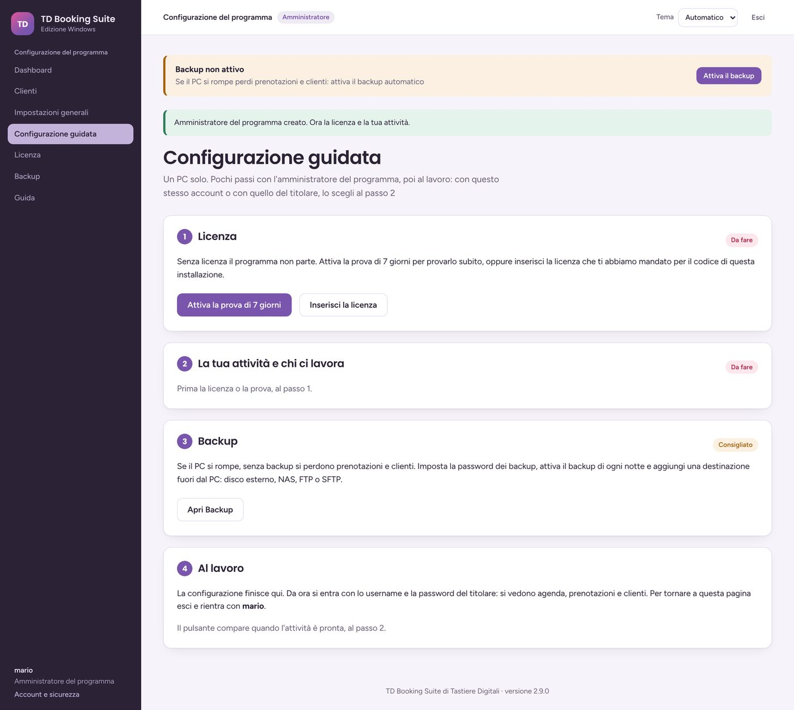
Configurazione guidata con Un PC solo, dopo aver attivato la prova.
Passo 1 · Licenza
Premi Attiva la prova di 7 giorni per partire subito, oppure Inserisci la licenza. Nella pagina Licenza trovi il codice installazione: mandalo a Tastiere Digitali per ricevere la licenza di questo PC, poi incollala nella stessa pagina e premi Attiva la licenza.
Controllo online: una volta al giorno, quando c'è Internet, il programma guarda se Tastiere Digitali ha cambiato la licenza di questo PC. Una licenza nuova (senza scadenza, con una scadenza, con più postazioni) arriva da sola; una revocata smette di valere e il programma si ferma come a fine prova, con prenotazioni e clienti salvati. Senza Internet resta la licenza in uso. Controlla ora, nella pagina Licenza, lo fa subito.
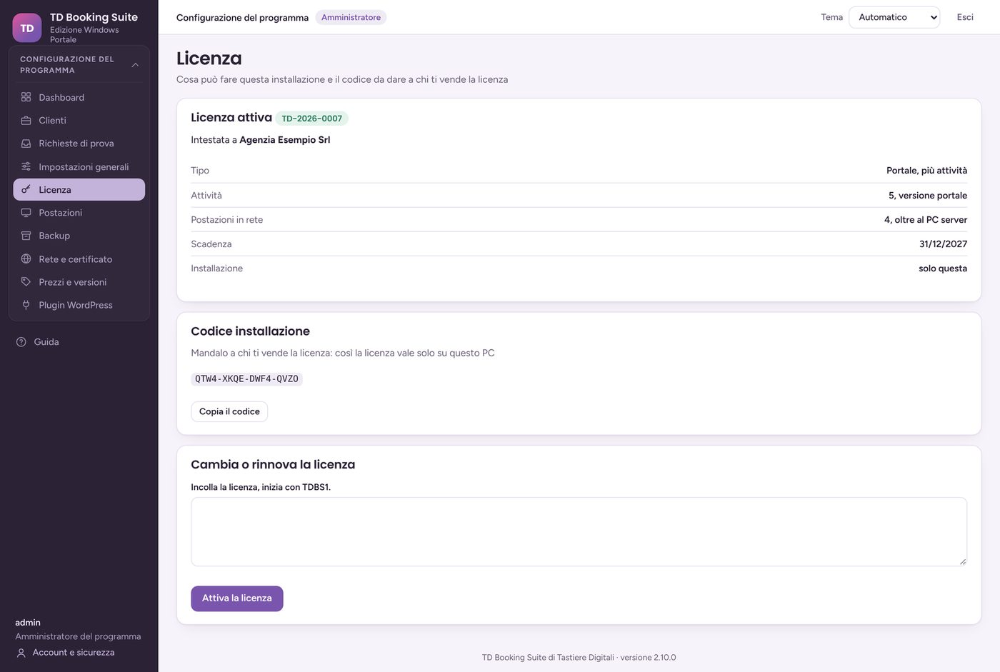
Licenza: il tipo, cosa consente, il codice installazione e il campo per incollare la licenza nuova.
Passo 2 · La tua attività e chi ci lavora
Scrivi il nome dell'attività e scegli il tipo (parrucchiere, ristorante, studio…): prepara servizi, orari e domande giuste per quel lavoro, che poi si cambiano in Configura l'attività. Poi scegli chi ci lavora.
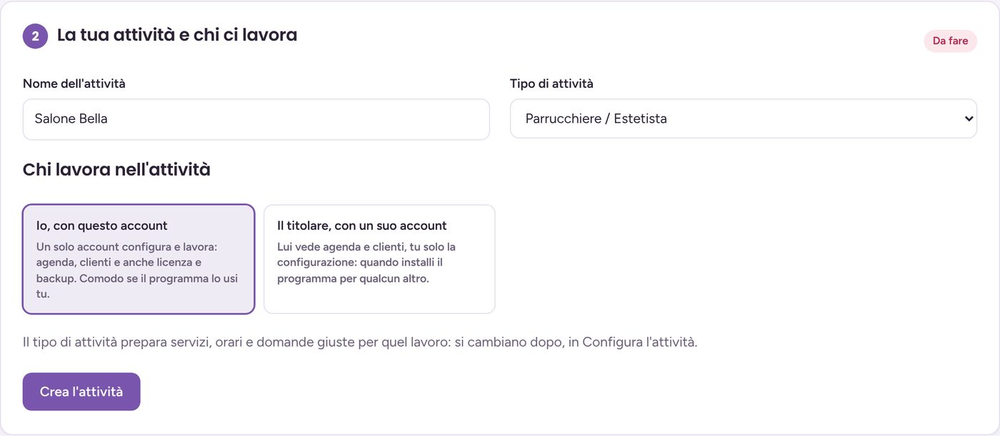
Io, con questo account: un solo account configura e lavora. È la scelta proposta con Un PC solo.
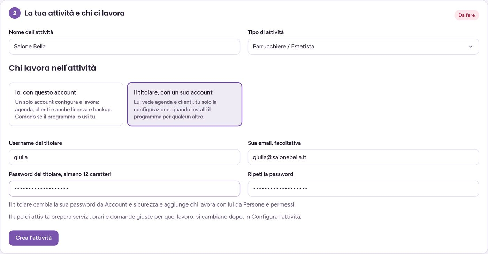
Il titolare, con un suo account: scrivi il suo username, se vuoi la sua email, e la sua password. È la scelta proposta con Server con postazioni, e quando installi per un cliente.
Se il titolare ha già un account, per esempio perché ha già un'altra attività con la licenza Portale, scrivi solo il suo username o la sua email e lascia vuote le password: resta la sua.
Passo 3 · Backup
Imposta la password dei backup, attiva il backup di ogni notte e aggiungi una destinazione fuori dal PC: disco esterno, NAS, FTP o SFTP. È spiegato nel capitolo 11.
Passo 4 · Postazioni e accesso da fuori
Solo con Server con postazioni: registri gli altri PC (capitolo 9) e, se serve, l'accesso da fuori dall'ufficio (capitolo 10).
Al lavoro
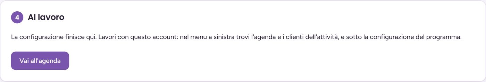
Con Io, con questo account: Vai all'agenda e lavori subito.
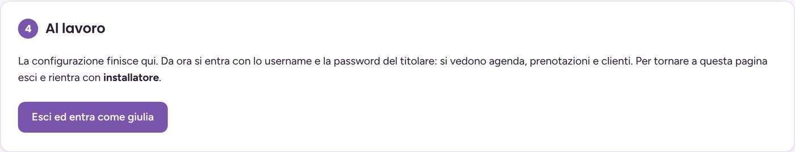
Con il titolare: Esci ed entra come … chiude la sessione dell'amministratore e apre l'accesso con lo username del titolare già scritto.
6Gli account e l'accesso
Chi vede cosa
Account
Vede e fa
Amministratore del programma
Configura: licenza, backup, configurazione guidata, impostazioni generali, tipo di attività, sedi, servizi, domande del modulo, sito; sul server postazioni e rete, su Un PC solo Online e sito. Agenda e clienti solo se lavora nell'attività (Io, con questo account).
Titolare
Lavora: agenda, prenotazioni, clienti, notifiche ed email ai clienti, registro attività, marketing se l'amministratore lo attiva. Tiene aggiornati orari, chiusure e ferie, gli operatori, il listino (servizi, varianti, prezzi e sconti dei clienti), i turni del ristorante e le date degli eventi, e il suo logo. Tipo di attività, sedi, tipo di prenotazione dei servizi e persone con accesso li cambia l'amministratore del programma: Persone e permessi il titolare non la vede.
Persone dell'attività
Quello che il loro ruolo consente: per esempio l'operatore vede l'agenda delle sue risorse, la reception le prenotazioni, il marketing contatti e campagne.
Entrare
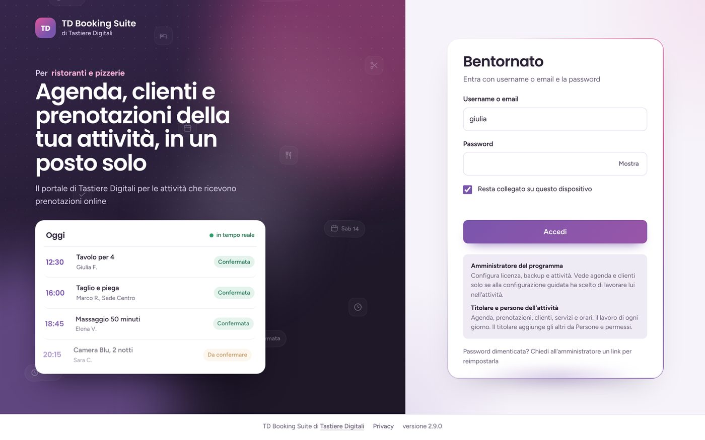
Accesso: username o email e password. Sotto il modulo c'è il promemoria dei due account.
Scrivi lo username oppure l'email, se l'account ne ha una, e la password.
Entra senza password: l'amministratore del programma lo accende per un titolare da Persone e permessi. Dal PC del programma e dalle postazioni registrate la pagina di accesso mostra Entra come …: un clic e il titolare è dentro. Da un dispositivo non registrato serve la password, e le pagine sensibili si confermano con un clic.
Resta collegato su questo dispositivo è spuntato di serie: il programma si riapre già collegato, sempre, finché non premi Esci.
Esci, in alto a destra, chiude la sessione: serve per entrare con un altro account, per esempio come amministratore.
Il secondo fattore
Con Un PC solo si entra solo con username e password: il programma risponde solo a quel PC. Con Server con postazioni si può aggiungere, da Account e sicurezza, Authenticator (Google Authenticator, Microsoft Authenticator…) o una passkey: è facoltativo, e l'avviso Proteggi il tuo account lo vede solo l'amministratore del programma.
Le pagine che cambiano accessi o impostazioni chiedono di confermare che sei tu, al massimo ogni 15 minuti: con la password, o con il secondo fattore se lo hai attivato.
7Il lavoro di ogni giorno
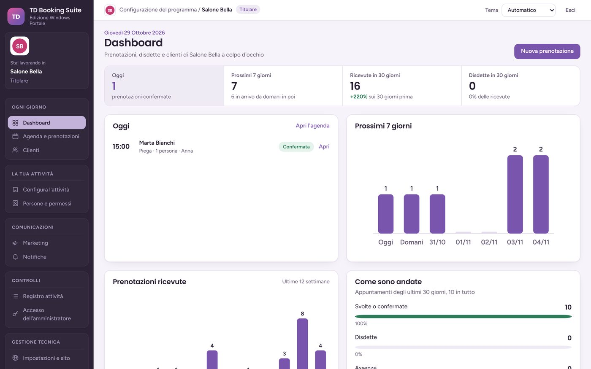
Dashboard dell'attività: prenotazioni di oggi e dei prossimi giorni, ricevute e disdette. Nel menu a sinistra agenda, clienti, configurazione e comunicazioni; in alto il logo dell'attività.
In cima alla dashboard Oggi e Prossimi 7 giorni si cliccano: l'elenco sotto mostra chi viene e a che ora, oggi o giorno per giorno nella settimana. Una colonna del grafico dei prossimi giorni porta dritta a quel giorno.
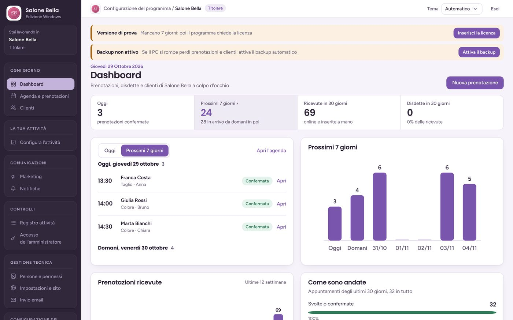
Prossimi 7 giorni: giorno per giorno, l'ora, il cliente, il servizio e l'operatore.
Il menu è diviso in gruppi, ognuno nella sua cornice, con un'icona per voce: in alto il lavoro di ogni giorno, sotto l'attività, le comunicazioni e i controlli; la configurazione del programma si apre e si chiude con un clic. Finita la configurazione guidata, la sua voce sparisce.
Agenda e prenotazioni: per parrucchieri, estetica, studi e campi si apre sul giorno, con una colonna per ogni operatore che lavora quel giorno, o per uno solo scelto in alto; Settimana mostra i sette giorni ora per ora, per tutti o per un operatore, Mese quanti appuntamenti ha ogni giorno, Elenco la lista. Ogni operatore ha il suo colore e un ! arancione segnala allergie o intolleranze. Un clic su uno spazio libero apre Nuova prenotazione con operatore, giorno e ora già messi: cerchi il cliente in rubrica (o scrivi uno nuovo), scegli il trattamento e l'orario è già selezionato. Per ristoranti, soggiorni ed eventi c'è l'elenco della settimana.
Trascinare e stampare: nell'agenda del giorno un appuntamento si trascina su un'altra ora o nella colonna di un altro operatore (nella settimana anche su un altro giorno) e il bordo in basso si tira per cambiare la durata; sul tablet si tiene premuto un attimo. Prima di salvare il programma chiede conferma. Ogni stato ha il suo colore o segno, spiegati nella legenda sotto l'agenda, con Mostra le annullate. Agenda e dashboard si aggiornano da sole. Stampa apre il foglio del giorno, per tutti o per un operatore; Nascondi nomi, in alto accanto a Tema, sfoca i nomi sugli schermi che vedono i clienti; ? mostra i tasti.
Al banco e Forza: dal programma si prenota da adesso fino a due anni avanti, senza il preavviso e i limiti della pagina online. Con la spunta Forza, nella nuova prenotazione e nello spostamento, si scrivono giorno e ora a mano e si prenota anche fuori orario, oltre i posti o sopra un altro appuntamento: il programma dice cosa si supera e chiede una seconda conferma. Forzano il titolare e l'amministratore sede; reception e operatori solo se il titolare lo accende in Configura l'attività › Al banco.
Senza appuntamento, nella dashboard e nell'agenda di oggi: per chi entra senza prenotare si sceglie il servizio e con chi (Il primo disponibile prende il primo libero). Nome e recapiti sono facoltativi; la prenotazione parte adesso, già In corso.
Blocca orario, nell'agenda del giorno: toglie un orario a un operatore per una pausa, una formazione o una riunione, una volta o ogni settimana. In agenda è una fascia grigia; non conta nelle statistiche.
Lista d'attesa, in Ogni giorno: chi aspetta un posto, con Chiama, WhatsApp, Prenota e Aggiungi. Quando si libera un posto il programma manda da solo l'email Si è liberato un posto. In Configura l'attività › Al banco il titolare sceglie se avvisare tutti o tenere il posto per il primo della lista (Uno alla volta).
Clienti: a sinistra chi è il cliente (recapiti, allergie, sconto in percentuale o in euro, note), a destra Panoramica con speso e appuntamenti in programma, Prenotazioni con il prezzo, Trattamenti e Consensi e privacy. In Etichette e preferenze si mettono etichette, data di nascita, Cliente VIP e Non prenotabile online; la stella VIP e il numero di assenze compaiono anche in agenda. Unisci con un'altra scheda riunisce due schede dello stesso cliente. La ricerca trova i nomi dall'inizio delle parole, anche senza accenti.
Report: scegli il periodo, o premi un Anno intero. Dallo storico dei clienti, cioè dagli scontrini con il cliente e dallo storico importato dal programma di prima, ci sono i lavori e gli incassi per operatore, per mese e per cliente; poi occupazione, assenze, clienti nuovi e di ritorno, origine delle prenotazioni. In alto ci sono incassato, visite, media a visita e clienti, con le barre per mese e per operatore; poi anno per anno con gli operatori, i servizi più fatti e l'elenco dei trattamenti. Gli incassi li vedono solo il titolare e l'amministratore sede. Ogni tabella si scarica in Excel o si stampa in PDF (nella finestra di stampa scegli Microsoft Print to PDF o Salva come PDF).
Le ricerche restano: se apri un cliente e torni alla lista, dalla scheda o dal menu, ritrovi la ricerca di prima. Mostra tutti la azzera.
Configura l'attività: il titolare ci trova orari di apertura, chiusure e ferie e gli operatori. Per ogni operatore carica la foto, spunta in Cosa fa i trattamenti che fa, ognuno con la sua durata e il suo prezzo se diversi (vuoti valgono quelli del trattamento), e, se non segue gli orari dell'attività, i suoi giorni e orari; dalla sua scheda segna le ferie. Ci sono anche i servizi con varianti e prezzi, e per ristoranti ed eventi i turni e le date (anche ripetute, con Ripeti). Nella scheda dell'operatore ogni giorno può avere una seconda fascia, per la pausa pranzo; negli orari Ogni quante settimane fa le settimane alterne. In Chiusure e giorni speciali una riga va Dal giornoAl giorno, e Segna le festività mette in un clic le festività italiane dell'anno, con Pasqua e il santo patrono. Tipo di attività, sedi, tipo di prenotazione e domande del modulo li imposta l'amministratore del programma.
Logo e aspetto, in fondo a Configura l'attività: il titolare carica il logo (PNG, JPEG o WebP fino a 1 MB, anche orizzontale), che compare in alto nel menu al posto di "TD", sceglie il colore e la frase sotto il nome. L'anteprima del menu e della pagina prenotazioni cambia mentre scegli.
Notifiche: gli avvisi per voi a ogni prenotazione nuova, spostata o annullata, per email o su Telegram, con Avvisa anche l'operatore e il Riepilogo serale delle prenotazioni di domani. Sotto, le email ai clienti, a gruppi: Promemoria e conferme, Prima dell'arrivo, Dopo la visita. Conferma, modifica e annullamento partono da sole, con il logo dell'attività. Il promemoria è acceso di serie per le attività nuove (il giorno prima); se parte e quando lo decide l'amministratore del programma (vedi sotto); ha i tasti Confermo e Non vengo, e chi conferma ha la spunta verde ✓ in agenda. Chi non ha confermato compare nella dashboard in Da chiamare. Se l'amministratore le attiva in Impostazioni e sito, il titolare sceglie anche quali email standard partono e scrive oggetto e testo, con i campi da inserire con un clic e l'anteprima. Il cliente sceglie nel modulo di prenotazione se riceverle; dalla sua scheda, in Consensi e privacy, si accendono o si spengono. Avvisi e riepilogo per un operatore partono solo se la persona ha l'email in Persone e permessi.
Marketing compare quando l'amministratore del programma lo accende in Impostazioni e sito: le campagne email, il CSV degli iscritti per Brevo, Mailchimp o un foglio, o tutti e due.
Persone e permessi, solo per l'amministratore del programma, in Gestione tecnica: aggiunge chi lavora nell'attività con uno username, l'email se vuole, e il ruolo. L'accesso si consegna con un link di invito oppure con una password che scegli tu. Una persona che ha già un account si aggiunge scrivendo solo il suo username o la sua email.
I link aperti dal cliente vogliono Online e sitoI tasti Confermo e Non vengo, la pagina Gestisci con Sposta, Aggiungi al calendario e il link della lista d'attesa funzionano solo se la pagina prenotazioni è raggiungibile da Internet: con Server con postazioni messo online, o con Un PC solo con Online e sito acceso (capitolo 10). Senza, l'email arriva lo stesso ma il link non si apre; al banco si lavora come sempre.
Promemoria impostati dall'amministratore
Se partono e quando li decide l'amministratore del programma: promemoria, secondo promemoria, annullamento di chi non conferma, Prima dell'arrivo e Dopo la visita. Il titolare li vede in Notifiche e promemoria come sono impostati, con la scritta «Se parte e quando: li imposta l'amministratore del programma».
L'amministratore apre Notifiche e promemoria dell'attività e scende a Email ai clienti.
Nella card Promemoria accende l'interruttore e sceglie Quando parte: un numero di ore prima (con 24, un appuntamento di martedì alle 10 riceve il promemoria lunedì alle 10), oppure Il giorno prima, a un'ora fissa, e scrive l'ora, per esempio 18:00. Con l'ora fissa chi prenota dopo quell'ora non lo riceve, perché non serve.
In Se il cliente non preme Confermo sceglie se la prenotazione resta (e compare in Da chiamare) o si annulla da sola qualche ora prima, con un'email al cliente.
Se serve accende il Secondo promemoria, da 1 a 6 ore prima o anche lui il giorno prima a un'ora fissa, e preme Salva le email ai clienti.
I promemoria partono dal PC del programma: se a quell'ora il PC è spento, partono appena si riaccende, se c'è ancora tempo. Per i tasti Confermo e Non vengo vale la nota qui sopra.
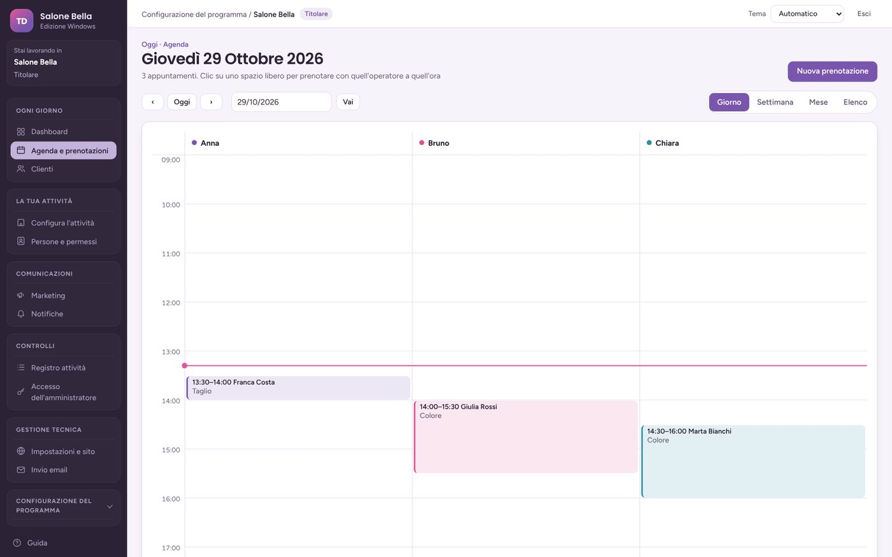
Agenda del giorno: una colonna per operatore.
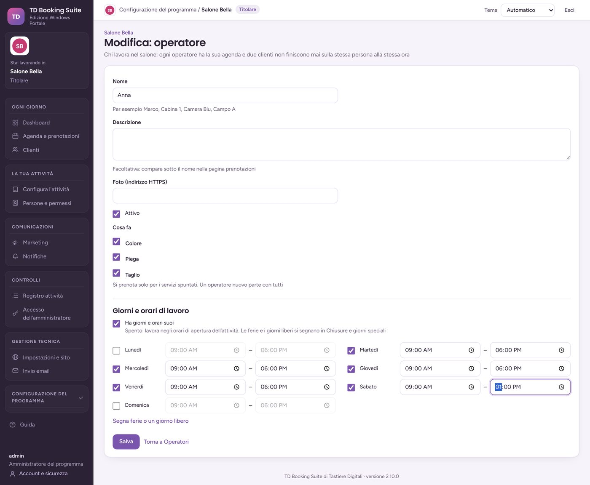
Operatore: foto, cosa fa con durata e prezzo suoi, giorni e orari, ferie.
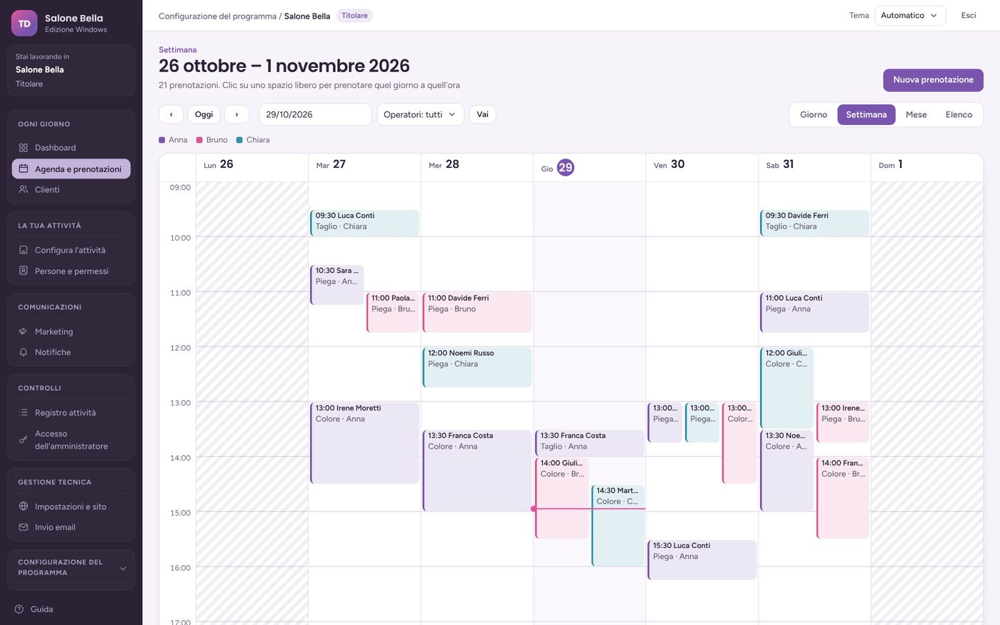
Settimana: i sette giorni ora per ora, un colore per operatore.
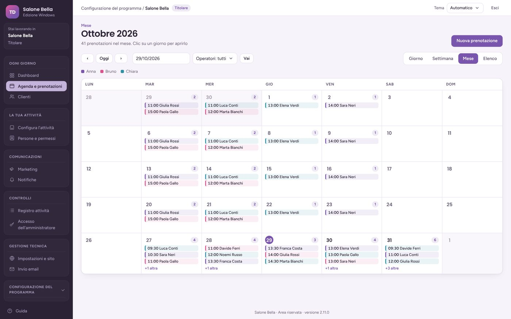
Mese: quanti appuntamenti ha ogni giorno.
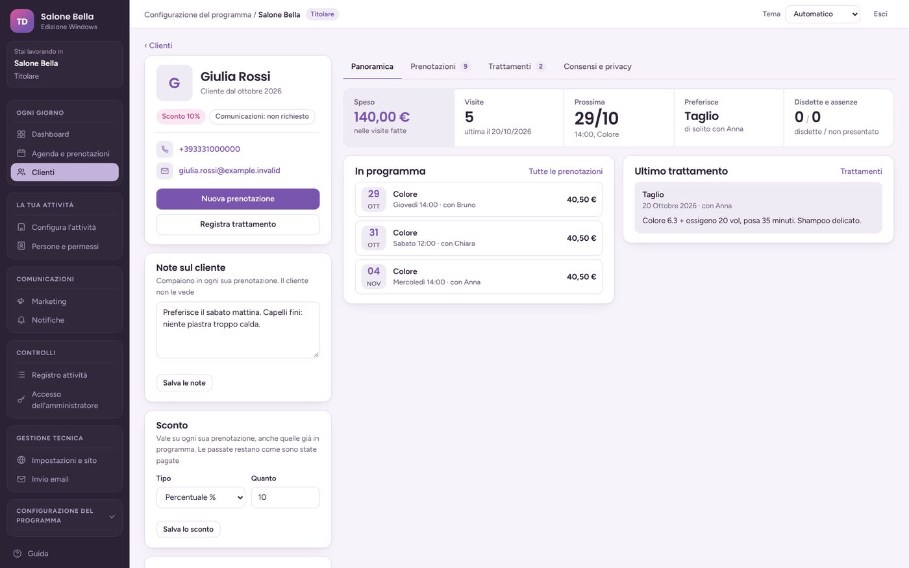
Scheda cliente: a sinistra chi è, con recapiti, note e sconto; a destra Panoramica, Prenotazioni, Trattamenti, Consensi e privacy.
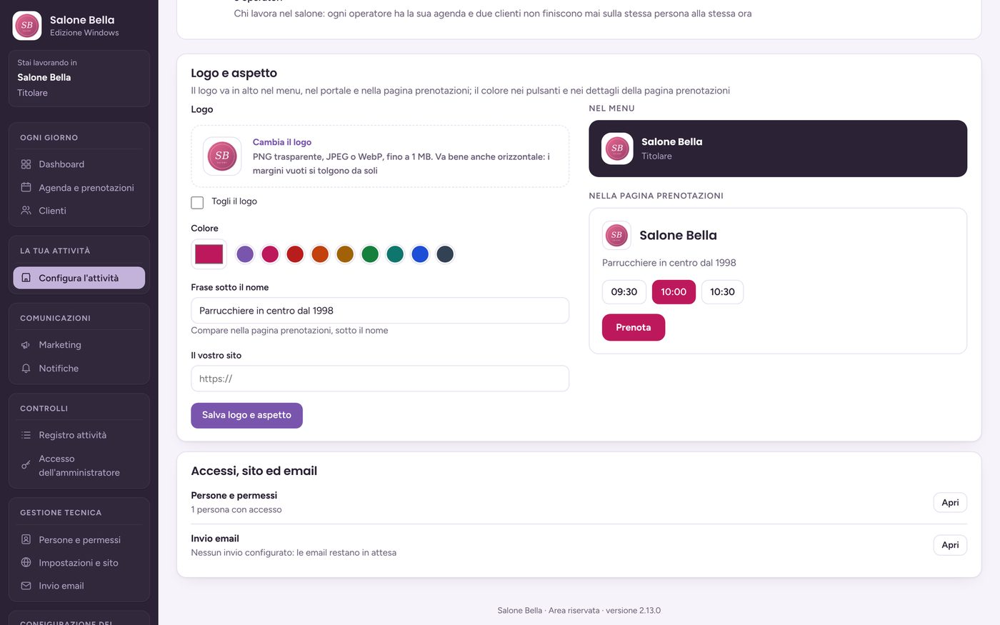
Logo e aspetto: logo, colore e frase, con l'anteprima.
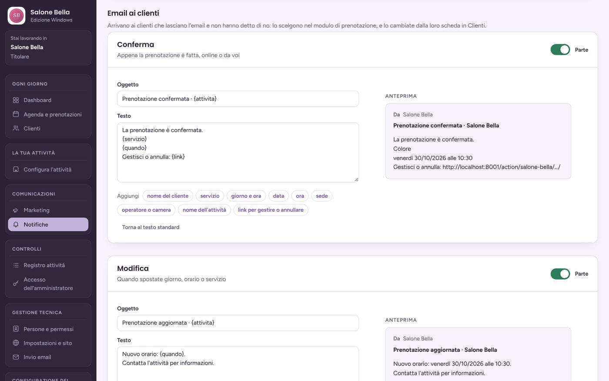
Email ai clienti: quali partono, i testi e l'anteprima.
Importare il listino dal programma di prima
In Servizi › Importa da Excel carichi un file Excel o CSV con le colonne Servizio, Prezzo e Durata in minuti: nasce un servizio su appuntamento per riga, nella sede che scegli. Con Tutti gli operatori della sede fanno questi servizi spuntato, li fanno tutti; dopo togli chi non li fa. I nomi già presenti si saltano. L'ordine giusto: prima gli operatori, poi il listino, poi i clienti con lo storico.
Importare i clienti dal programma di prima
In Clienti › Importa carichi un file Excel (.xlsx) o CSV con l'anagrafica e, se il tuo settore ha la scheda trattamenti, anche lo storico.
Ogni cliente si ritrova dall'email, poi dal telefono con il nome, poi dal codice cliente del programma di prima. Due persone con lo stesso telefono e nomi diversi, per esempio madre e figlia, hanno due schede. Anche un cliente senza telefono né email entra, se la riga ha nome e codice cliente. I file da più di 20.000 righe si dividono e si importano uno dopo l'altro, nell'ordine.
Lo storico più vecchio di due anniLe voci della scheda più vecchie del periodo di conservazione dei dati dell'attività (di serie 2 anni) non si importano, e la pulizia notturna le toglierebbe. Se vuoi tutto lo storico, prima allunga la conservazione nelle impostazioni dell'attività, poi importa.
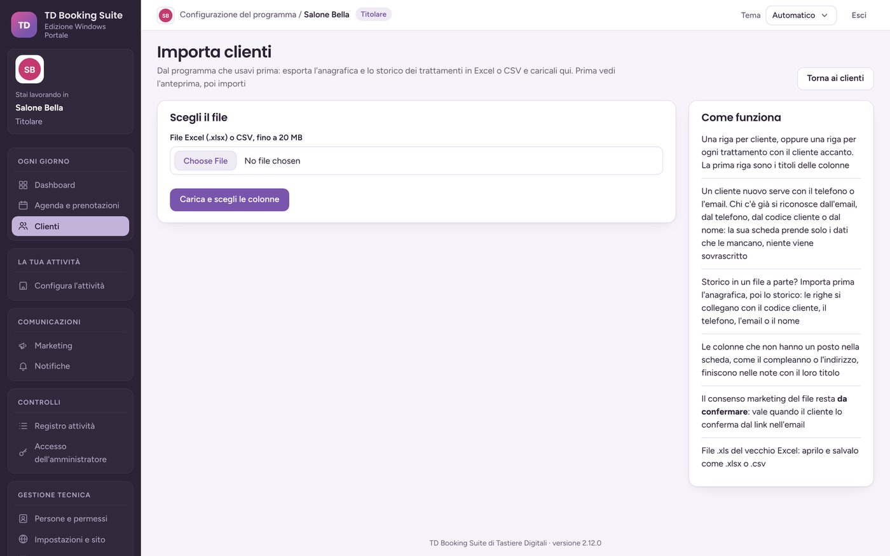
Il file: fino a 20 MB e 20.000 righe.
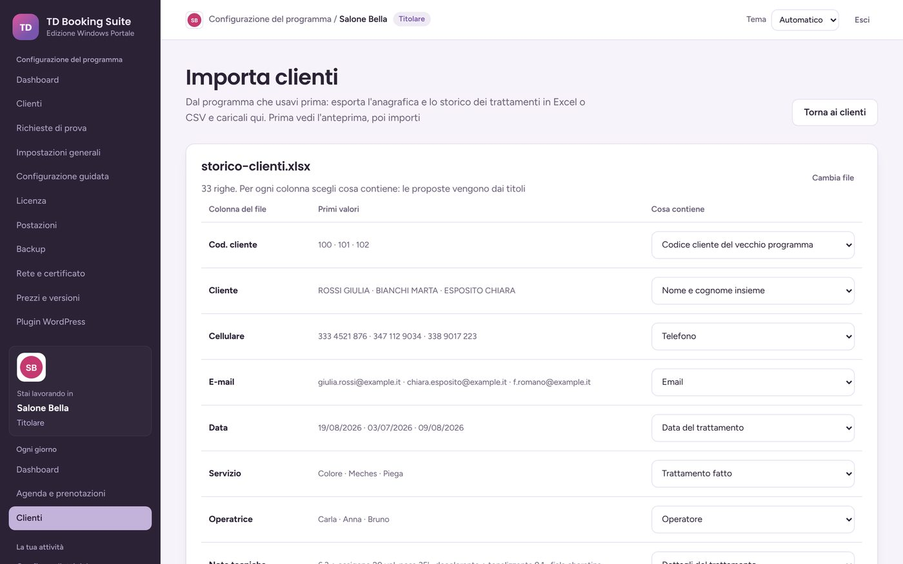
Le colonne: per ognuna scegli cosa contiene.
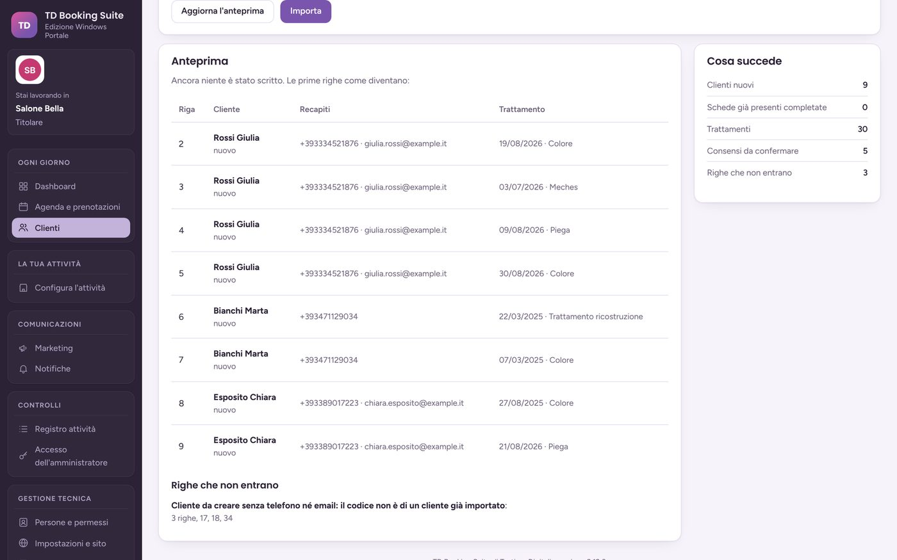
Anteprima: cosa succede a ogni riga e perché alcune non entrano. Chi è già in archivio prende solo i dati mancanti; reimportare lo stesso file non raddoppia niente.
Aspetto
In Impostazioni generali l'amministratore cambia nome, loghi chiaro e scuro, icona, colore principale e tema di partenza. Ognuno sceglie per sé il tema chiaro o scuro dalla barra in alto.
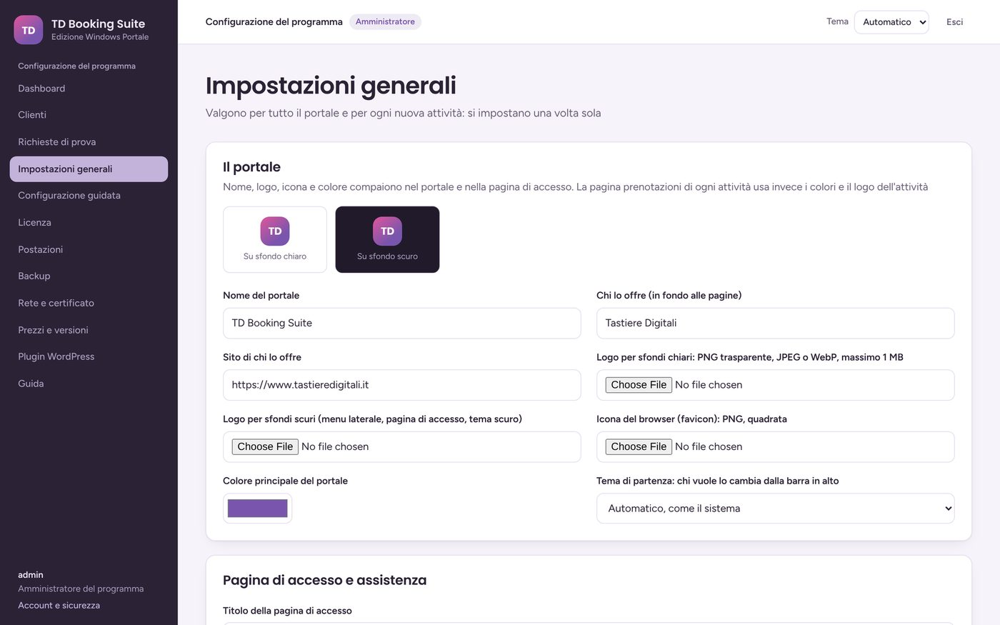
Impostazioni generali.
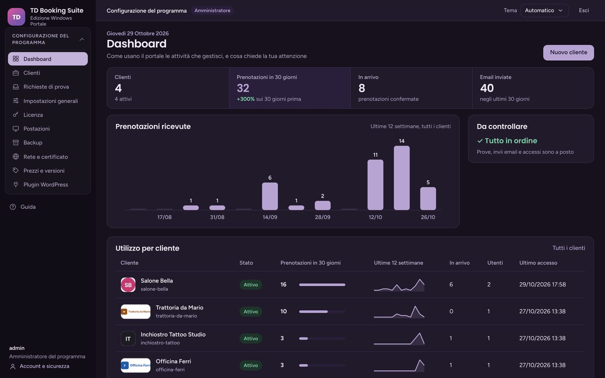
Tema scuro con un altro colore principale.
8Cassa e registratore di cassa
Dal programma chiudete il conto e lo mandate al registratore di cassa. È la cassa a stampare lo scontrino e a mandarlo all'Agenzia delle Entrate: il programma non fa mai scontrini da solo. I dati dello scontrino restano sulla prenotazione e nella scheda del cliente.
Vanno bene la RCH Print!F, in rete o con il cavo USB, e le Epson FP-81II e FP-90III RT, in rete. Il PC con il programma parla direttamente con la cassa: non serve installare altro.
Chiudere il conto
La usano titolare, amministratore sede e reception; gli operatori solo se il titolare lo permette in Configura l'attività › Al banco.
Apri Ogni giorno › Cassa, oppure dalla prenotazione premi Chiudi il conto: il servizio arriva già con il suo prezzo, con gli altri servizi della stessa visita.
In alto nel conto scegli il Cliente: scrivi nome, telefono o email e clicca il suo nome nell'elenco. È facoltativo, ma solo con il cliente scelto lo scontrino va nella sua scheda.
Tocca i servizi nella griglia a sinistra o cercali: compaiono nel conto. Con − e + cambi la quantità; prezzo e descrizione si possono correggere. Riga libera serve per un prodotto o una cosa fuori listino.
Sotto ogni voce scegli l'Operatore che l'ha fatta; dalla prenotazione arriva già scelto. Non va sullo scontrino: serve per lo storico del cliente.
Lo Sconto di una riga si scrive accanto al prezzo, in euro (5,00) o in percentuale (10%, 100% per un omaggio): sullo scontrino esce come riga SCONTO sotto quel servizio. Anche lo Sconto sul totale va in euro o in percentuale e toglie da tutto il conto.
Scegli il pagamento: contanti, carta o bancomat, altro. Se il cliente paga in due modi apri Dividi il pagamento: la somma deve fare il totale.
Codice fiscale e codice lotteria solo se il cliente li dà. Se hai scelto il cliente e la sua scheda ha il codice fiscale, si mette da solo.
Premi Invia alla cassa. La cassa stampa lo scontrino, la prenotazione diventa Completata e lo scontrino compare sotto, in Scontrini di oggi; la pagina si aggiorna da sola mentre la cassa lavora.
Lo scontrino nello storico del clienteCon il cliente scelto, appena la cassa emette lo scontrino nella sua scheda, in Trattamenti, compare la visita del giorno: ogni voce con quantità, prezzo e operatore, gli sconti, il totale, il pagamento e il numero del documento. Un annullo aggiunge la sua riga. Nello stesso giorno puoi aggiungere a mano altri trattamenti con Aggiungi trattamento, per esempio la formula del colore.
Copia per email: solo se il cliente la chiede. Prima di inviare scegli il cliente (serve l'email nella scheda) e spunta Il cliente vuole la copia per email: resta registrato il suo consenso, separato da quello per le offerte. La copia non vale come scontrino. La copia per email parte solo se il programma può mandare email.
Scritta
Cosa vuol dire, cosa fare
In coda, In corso
Lo scontrino sta andando alla cassa. Aspetta qualche secondo: la pagina si aggiorna da sola.
Emesso
La cassa l'ha stampato. Ci sono Copia, Rimanda la copia e l'annullo.
Non emesso
La cassa ha detto di no e lo scontrino non è uscito. Sotto c'è il motivo (carta finita, coperchio aperto, errore della cassa): sistema la cassa e premi Riprova.
Da verificare
Il conto è partito ma la risposta della cassa non è arrivata: lo scontrino può essere uscito oppure no. Guarda la cassa. Se è uscito premi È uscito (se vuoi scrivi il numero); se non è uscito Non è uscito, rimanda. Non rimandare senza aver guardato: rischi due scontrini.
Annullato
Premi Annulla con il «Documento n.» dello scontrino e la cassa stampa l'annullo (vedi qui sotto). Se sulla RCH il comando di annullo è vuoto, l'annullo si fa dalla cassa e qui si preme Annullato dalla cassa.
Chiusura giornaliera e annulli
In fondo alla Cassa, nel riquadro Chiusura e annulli.
Chiusura giornaliera. A fine giornata, dopo l'ultimo scontrino, premi Chiusura giornaliera: la cassa stampa la chiusura e manda i corrispettivi all'Agenzia delle Entrate. Conservala come sempre
Annullare uno scontrino di oggi. In Scontrini di oggi premi Annulla accanto allo scontrino. Serve il suo «Documento n.», stampato in fondo (per esempio 2026-0012: 2026 è la chiusura, 0012 il documento): se il programma lo conosce è già scritto, altrimenti copialo dallo scontrino. La cassa stampa l'annullo e lo scontrino risulta Annullato
Annullare uno scontrino di un altro giorno, o fatto dalla cassa: in Annulla un altro scontrino scrivi la data e il «Documento n.» e premi Annulla lo scontrino
Conserva lo scontrino sbagliato insieme all'annullo. Sulla RCH i comandi di sconto di riga, annullo e chiusura vanno provati la prima volta: se la cassa dà errore si correggono in Registratore di cassa › Comandi RCH da provare. Lasciati vuoti, annullo e chiusura si fanno dalla cassa e qui l'annullo si segna con Annullato dalla cassa.
Collegare la cassa
Una volta per ogni sede, nella pagina Registratore di cassa: la apre l'amministratore del programma, in Gestione tecnica, o il titolare se l'amministratore glielo permette nelle impostazioni dell'attività.
Chiedi i numeri al tecnico della cassa. Ogni cassa ha i suoi reparti, ognuno con la sua aliquota IVA (per esempio reparto 1 al 22%), e i suoi numeri dei pagamenti (contanti, carta, non riscosso). Li ha impostati il tecnico che ha installato la cassa: chiediglieli, e per la cassa in rete chiedi anche un indirizzo IP fisso.
Cerca la cassa (sul PC del negozio, nella versione Windows): il programma cerca le casse RCH ed Epson nella rete di questo computer e mostra anche le porte USB. Premi Usa questa accanto alla cassa trovata: modello, collegamento e indirizzo si compilano da soli; controlla e salva. Se la cassa ha sia il cavo di rete sia la USB, usa la rete. Con il ponte cassa la stessa ricerca si fa con python ponte_cassa.py --cerca
Scegli la cassa e il collegamento. In Registratore scegli il modello. In Collegata con scegli Rete se la cassa ha il cavo di rete, USB / seriale se è attaccata con il cavo USB (solo RCH). In Collegamento lascia Da questo computer, nella stessa rete.
In rete: l'indirizzo IP. La cassa deve stare nella stessa rete del PC con il programma (con Server con postazioni, del PC server). Sulla RCH l'indirizzo è nel menu della cassa: SRV › Connettività › Ethernet, e il web server della cassa deve essere acceso. Sulla Epson chiedilo al tecnico. È un numero come 192.168.1.50.
Via USB: la porta COM. Attacca la cassa al PC dove gira il programma (con Server con postazioni, al PC server). Poi tasto destro su Start, Gestione dispositivi, apri Porte (COM e LPT): la cassa compare con il suo numero, per esempio COM3, e il programma propone le porte che vede. Scegli la velocità che dice il tecnico e lascia il protocollo RCH con conferma: senza conferma ogni scontrino resta da verificare a mano.
Matricola: è sulla targhetta della cassa e in fondo agli scontrini.
Reparti e pagamenti. In Reparti dei servizi scrivi per ogni servizio il numero del reparto: è il reparto a decidere l'IVA, la colonna IVA è solo un promemoria. Scrivi anche il reparto per le righe libere e, in Pagamenti, i numeri del tecnico (vuoti valgono quelli scritti sopra). Premi Salva.
Prova collegamento. Sotto compare l'esito: «la cassa risponde», oppure il motivo. Poi Stampa scontrino di prova stampa un documento non fiscale.
Primo scontrino vero, piccolo. Dalla Cassa fai un conto di pochi centesimi con una riga libera e invialo. Controlla sullo scontrino reparto, IVA e pagamento. Poi annullalo: su RCH dalla cassa e poi Annullato dalla cassa, su Epson con Annulla.
Comandi RCH da provareSulla RCH sconto di riga, annullo e chiusura usano i comandi di Registratore di cassa › Comandi RCH da provare: di serie =V-/${importo}, =k/&{data}/[{z}/]{numero} e =C3 =C10 =C1. Provali la prima volta con uno scontrino di pochi centesimi: se la cassa dà errore, chiedi al tecnico RCH il comando giusto e scrivilo lì. Vuoti: lo sconto esce dentro il prezzo, annullo e chiusura si fanno dalla cassa. Sulla Epson sono già previsti.
Se la cassa non rispondeControlla che sia accesa e nella stessa rete, e che l'indirizzo IP sia ancora quello del menu della cassa: se cambia ogni tanto, serve un indirizzo fisso. Via USB, se attacchi il cavo a un'altra presa il numero COM può cambiare: guardalo di nuovo in Gestione dispositivi.
Dati fiscali del cliente
Per mettere il codice fiscale sullo scontrino e avere pronti i dati di chi chiede la fattura (la fattura non la fa il programma). Li vede e li cambia chi crea prenotazioni e vede i recapiti.
Apri Clienti, cerca il cliente e apri la scheda.
Nella card Dati fiscali premi Aggiungi i dati fiscali e scegli il tipo: privato, azienda o ditta, professionista.
Scrivi codice fiscale e, per aziende e professionisti, ragione sociale, partita IVA, indirizzo con CAP, comune, provincia (la sigla, per esempio RM), nazione (IT), codice destinatario SDI o PEC.
Premi Salva i dati fiscali. Il programma controlla codice fiscale e partita IVA e dice se c'è un errore di battitura. Per l'estero partita IVA e CAP restano liberi.
In Cassa, scelto il cliente, il codice fiscale si mette da solo. I dati sono cifrati con il resto della scheda, si importano con i clienti (colonne Codice fiscale, Partita IVA, Ragione sociale, PEC, SDI, CAP, Provincia) e vanno via con la cancellazione del cliente.
9Le postazioni
Solo con Server con postazioni. Le postazioni sono gli altri PC dell'ufficio, ma anche un browser o un telefono: ognuna si registra una volta con un codice.
Un altro PC
Installa lo stesso MSI scegliendo Solo postazione.
Al primo avvio la finestra chiede l'indirizzo del server, quello della pagina Postazioni del server, per esempio https://ufficio-pc:8443, e premi Collegati.
Mostra l'impronta del certificato: se è uguale a quella della pagina Postazioni del server, premi Continua. Da lì in avanti la ricorda.
Sul server, in Postazioni, scrivi un nome (per esempio Reception) e premi Genera il codice. Sulla postazione scrivi le 6 cifre entro 15 minuti.
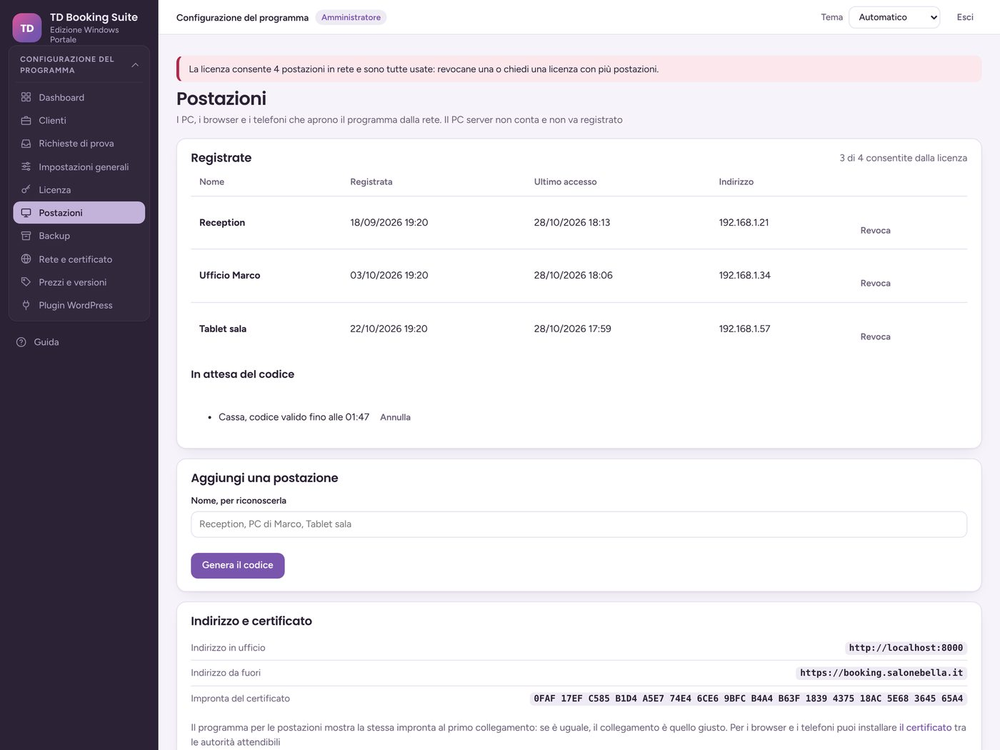
Postazioni sul server: il codice da scrivere sulla postazione, l'indirizzo del programma, l'impronta del certificato e l'elenco con l'ultimo accesso.
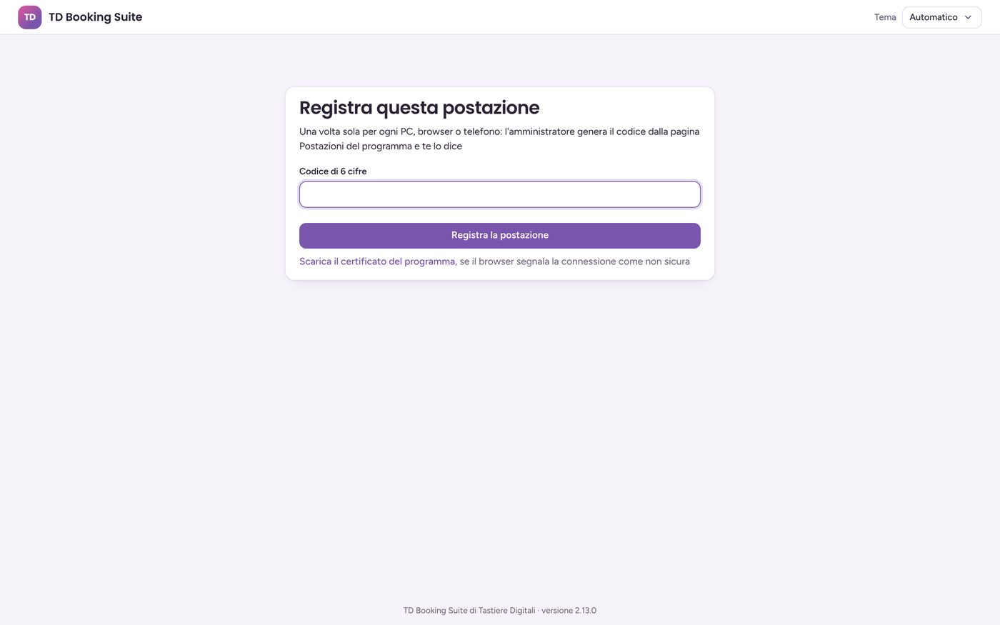
Registra la postazione: quello che vede un PC o un telefono non ancora registrato.
Browser e telefono
Apri l'indirizzo del server e scrivi il codice. Se il browser avvisa che la connessione non è sicura, scarica il certificato dal link nella pagina e installalo tra le autorità attendibili.
Le postazioni contano per la licenza, il PC server no.
Una postazione persa o rubata si revoca dalla pagina Postazioni.
Per collegare una postazione a un altro server: menu Start, Cambia server della postazione, oppure clic sull'icona in alto a sinistra della finestra e Cambia server.
Dopo 10 codici sbagliati da uno stesso PC, quel PC aspetta 15 minuti.
Copia dell'agenda per quando il server non risponde
Mentre è collegata, la finestra di TD Booking Suite (sulle postazioni, ma anche sul PC server e con Un PC solo) salva da sola una copia di sola lettura del foglio del giorno di oggi e di domani dell'ultima attività aperta: alla prima pagina dell'attività e poi ogni 15 minuti. Contiene solo quello che può vedere chi è collegato.
La copia sta sul PC, cifrata per quell'utente di Windows, in %LOCALAPPDATA%\TD Booking Suite\Copia agenda; quelle di prima di ieri si cancellano da sole.
Se il server non risponde, la pagina Il server non risponde ha il pulsante Apri la copia dell'agenda (sola lettura). La copia si apre con una striscia gialla con data e ora della copia; Riprova torna al programma.
La copia non tiene aperta la sessione: dopo 30 minuti senza nessuno si esce come sempre e la copia non si aggiorna fino al nuovo accesso.
10Da fuori dall'ufficio
Le sedi e chi lavora da fuori si collegano tutti allo stesso server, come postazioni: non c'è niente da sincronizzare. Il server può essere un PC dell'ufficio raggiungibile da Internet oppure un Windows in cloud. Si imposta in Rete e certificato, che vede solo l'amministratore del programma.
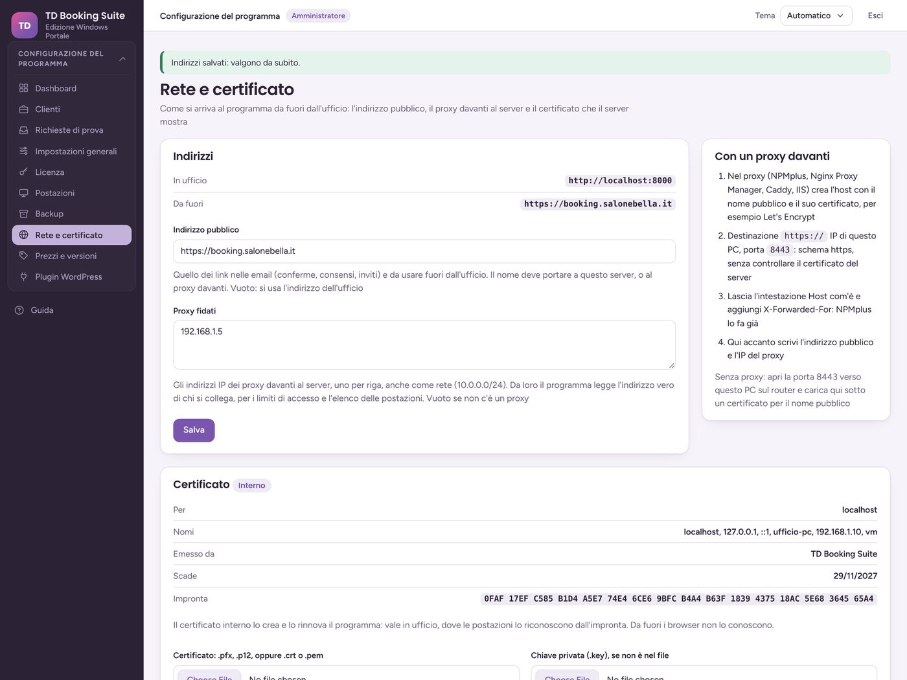
Rete e certificato: indirizzo pubblico, proxy fidati e certificato.
Indirizzo pubblico, per esempio https://booking.tuosito.it: è quello dei link nelle email (conferme, consensi, inviti) e da usare fuori dall'ufficio. Vale subito.
Proxy fidati: gli indirizzi IP del proxy davanti al server (NPMplus, Nginx Proxy Manager, Caddy, IIS). Nel proxy crea l'host con il nome pubblico verso https://IP-DEL-SERVER:8443, schema https, senza controllare il certificato del server, e lascia l'intestazione Host com'è.
Certificato: quello interno, che il programma crea e rinnova da solo, oppure uno tuo (.pfx/.p12, oppure .crt/.pem con la sua .key). Un mese prima della scadenza il programma lo ricorda; se scade torna al certificato interno.
Un PC solo: Online e sito
Con Un PC solo la pagina prenotazioni per i clienti e il modulo nel sito WordPress sono spenti: il programma risponde solo a quel PC. L'amministratore del programma li accende da Online e sito:
Nella finestra di TD Booking Suite premi Accendi e dai il permesso a Windows.
Il PC risponde anche dalla rete sulla porta del programma e apre quella porta nel firewall; il programma riparte e la pagina si aggiorna da sola.
Per Internet il router inoltra la porta a questo PC; nella stessa pagina scrivi l'indirizzo pubblico e, se c'è, il proxy.
Da fuori si raggiungono solo la pagina prenotazioni e il collegamento del sito: agenda, clienti e configurazione restano su quel PC. Spegni torna come prima.
La versione web. La finestra della postazione si collega anche a TD Booking Suite installato con Docker su un server Linux: installa Solo postazione e scrivi il suo indirizzo.
Sito WordPress con il PC spento
Con Un PC solo c'è anche un altro modo, senza aprire porte nel router: la modalità PC. Il sito WordPress prende le richieste di prenotazione anche con il PC spento. Quando il PC è acceso, ogni 2 minuti il programma chiama il sito: gli manda servizi, operatori e orari liberi e si prende le richieste arrivate. Le richieste diventano prenotazioni con origine Sito WordPress e il cliente riceve dal programma l'email di conferma. Se intanto quell'orario l'avete dato al banco, la prenotazione arriva tra le Richieste da confermare della dashboard. Sopra l'agenda e la dashboard una riga dice com'è andata l'ultima sincronizzazione.
Nel programma, come amministratore, apri Configura l'attività › Sito WordPress · modalità PC. Scrivi l'indirizzo del sito, per esempio https://www.sito.it, e quanti giorni si possono prenotare dal sito (30 di serie, al massimo 90). Premi Salva.
Premi Genera la chiave e copiala con Copia: si vede una volta sola.
Premi Scarica il plugin. In WordPress: Plugin › Aggiungi nuovo › Carica plugin, scegli lo zip, Installa ora e Attiva. Se c'era già, accetta di sostituirlo.
In WordPress, Impostazioni › TD Booking Suite, riquadro Modalità PC: incolla la chiave in Chiave dal programma, spunta Usa la modalità PC e premi Salva la modalità PC.
Metti lo shortcode [td_booking_suite] in una pagina del sito, per esempio Prenota.
Nel programma accendi Sincronizzazione attiva, premi Salva e poi Sincronizza ora. La riga in alto deve dire «Sincronizzato con il sito alle…»; altrimenti dice il motivo (vedi capitolo 13). Fai una prenotazione di prova dal sito e poi annullala.
Nel sito vanno i servizi su appuntamento, senza link riservato e senza domande obbligatorie. Il cliente vede «Disponibilità aggiornata alle…» e riceve «Richiesta ricevuta». I suoi dati restano nel sito, cifrati, solo finché il PC non li prende. Se il PC resta spento più dei giorni scritti nel plugin in Dati validi per (7 di serie), il modulo dice di contattarvi.
Agenda riservata sul sito
Con la modalità PC il titolare e i collaboratori vedono le prenotazioni anche con il PC spento, dal telefono, in una pagina del sito protetta da una password. Vista giorno e settimana, una colonna per operatore, con orario, servizio, stato, cliente, telefono e note, anche le richieste del sito non ancora prese dal PC. Sul telefono operatori e prenotazioni scorrono insieme, in un solo riquadro. Chi ha la password può anche aggiungere appuntamenti; spostarli e annullarli si fa dal programma.
In WordPress, Impostazioni › TD Booking Suite › Modalità PC: scrivi la Password dell'agenda (almeno 10 caratteri) e premi Salva la modalità PC.
Crea una pagina, per esempio Agenda, con lo shortcode [tdbs_agenda]. Non metterla nel menu del sito.
Togli quella pagina dalla cache del server: i plugin di cache di WordPress la saltano da soli, la cache del server no (per esempio la FastCGI cache di aaPanel: aggiungi /agenda/ agli indirizzi esclusi). Altrimenti le prenotazioni potrebbero arrivare a chi non ha la password.
Dai la password solo a chi deve vedere l'agenda. Arriva alla sincronizzazione dopo, entro 2 minuti con il PC acceso. Per aprirla: la pagina, la password, Apri l'agenda; Esci la chiude, e dopo 8 ore si esce da soli. Dopo 5 password sbagliate si blocca per 15 minuti.
Aggiungere un appuntamento dall'agenda del sito, anche con il PC spento:
Nell'agenda premi Nuovo appuntamento.
Scegli Servizio (e Prestazione, se ce n'è più d'una), Operatore e Giorno, poi uno degli orari liberi. Se serve un orario che non c'è, scrivilo in Altro orario: lo controlla il PC.
Scrivi Nome, Cognome e Telefono del cliente; Email e Note se ci sono. Premi Salva l'appuntamento.
L'appuntamento compare subito come «Da sincronizzare» e quell'orario sparisce dal modulo del sito. Quando il PC si accende diventa una prenotazione con origine Agenda del sito: confermata se l'orario è ancora libero, e il cliente con l'email riceve la conferma; se intanto l'avete dato al banco, va tra le Richieste da confermare.
Chi la può leggereChi ha la password. Il PC la manda cifrata, ma il sito la decifra per mostrarla: chi amministra il sito WordPress, o il suo hosting, può tecnicamente leggerla. Se non va bene, non impostate la password: senza, l'agenda resta spenta.
Il sito come archivio centrale
Con la modalità PC il sito può tenere anche la copia di tutto: diventa l'archivio delle prenotazioni. Il programma sul PC resta il motore (calcola gli orari, conferma, fa cassa); il sito conserva, mostra l'agenda riservata e permette di rimettere tutto su un PC nuovo.
Cosa va sul sito:
tutte le prenotazioni, anche quelle passate, con spostamenti, annullamenti e cambi di stato;
le schede clienti con i dati fiscali;
lo storico clienti: la scheda trattamenti (data, chi l'ha fatto, formula colore, prodotti, note) e lo storico dei consensi privacy e marketing;
il riepilogo degli scontrini emessi.
Ogni modifica fatta sul PC entra in una coda e parte alla sincronizzazione dopo. Se il PC è spento o senza Internet la coda aspetta e parte appena torna: ogni modifica arriva una volta sola e nell'ordine giusto, senza doppioni né buchi. Un cliente cancellato sul PC (diritto all'oblio) viene cancellato anche dal sito, con tutto il suo storico. Sul sito i dati sono cifrati: chi apre il database vede solo testo illeggibile. Lo storico trattamenti non compare nell'agenda riservata.
Nel programma, come amministratore, in Configura l'attività › Sito WordPress · modalità PC accendi Sito come archivio centrale e premi Salva.
In WordPress, Impostazioni › TD Booking Suite › Modalità PC, accendi Il sito come archivio centrale e premi Salva la modalità PC. Devono essere accese tutte e due: con una sola l'archivio resta fermo. Se la spegni nel plugin, la copia sul sito viene cancellata (il plugin chiede conferma): per riaverla la riaccendi e nel programma premi Carica tutto sul sito.
La prima volta premi nel programma Carica tutto sul sito: manda in un colpo lo storico che c'è già. Poi va avanti da solo.
Il titolare non vede né tocca queste impostazioni: le gestisce l'amministratore del programma.
Il sito e il PC si allineano sulla modifica più recente. Ogni prenotazione, cliente e scheda porta con sé il momento esatto della sua ultima modifica. Quando accendi l'archivio, e ogni volta che premi Sincronizza con il sito, il programma confronta i suoi dati con quelli del sito e tiene la versione modificata per ultima, da qualunque parte arrivi: quello che manca da una parte lo prende dall'altra, niente viene cancellato da solo. Il fuso orario del PC e quello del server del sito non contano: conta solo che l'ora del PC sia giusta (in Windows lascia accesa l'ora automatica). Alla fine un messaggio dice quanti dati ha preso dal sito, quanti ne ha mandati e quanti erano già uguali.
Se il sito è giù. Il programma lavora come sempre: le modifiche aspettano in coda e partono appena il sito risponde, insieme agli orari liberi aggiornati, così il sito torna subito a mostrare le disponibilità giuste.
Rimettere i dati su un PC nuovo (PC rotto o cambiato):
Installa il programma e collegalo al sito con la stessa chiave.
Ricrea servizi e operatori con gli stessi nomi: il programma dice quali mancano.
Premi Ripristina dal sito: tornano clienti, prenotazioni, storico trattamenti e consensi, già agganciati tra loro.
Su un'attività vuota il ripristino parte subito; se ci sono già dati chiede conferma. In ogni caso non crea doppioni. Il backup del capitolo 11 resta comunque da tenere: l'archivio sul sito non contiene licenza, chiavi e impostazioni del programma.
Il sito deve avere i permalink diversi da «Semplice» (Impostazioni › Permalink, per esempio Nome articolo) e la pagina dell'agenda esclusa dalla cache del server.
Per il firewall del sito
Se davanti al sito c'è un firewall applicativo (WAF), le chiamate del PC vanno lasciate passare. Nella whitelist del WAF, tipo path, aggiungi due voci:
Tipo
Valore
Nota
path
/wp-json/tdbs/v1/sync
TD Booking Suite – PC
path
/wp-json/tdbs/v1/archive/
TD Booking Suite – PC
Così valgono per tutti i siti. Per un sito solo: sitocliente.it|/wp-json/tdbs/v1/sync e sitocliente.it|/wp-json/tdbs/v1/archive/. Il nome va scritto esatto: se il sito risponde anche con il www, aggiungi le stesse voci con www.sitocliente.it.
Non aprire tutto /wp-json/tdbs/v1/: lì ci sono anche /slots, /book e /agenda/book, che usano i visitatori e l'agenda riservata dal browser e devono restare protetti dal WAF.
Da quei due percorsi passano solo richieste POST in JSON dal PC, con le intestazioni X-TDBS-Time e X-TDBS-Signature: la firma è fatta con la chiave condivisa, e una richiesta più vecchia di 5 minuti o ripetuta viene rifiutata.
Le richieste dell'archivio pesano al massimo 512 KB: l'archivio viaggia a pezzi, sotto il limite di 1 MB che nginx ha di serie. Quella degli orari liberi (/sync) di solito pesa molto meno; con tanti servizi e 90 giorni prenotabili può superare 1 MB: se nel programma la sincronizzazione dice errore 413, alza nel proxy il limite del corpo a 5 MB (in NPMplus: client_max_body_size 5m; nella configurazione avanzata dell'host).
Un percorso con ../ non passaIl WAF non applica l'eccezione a un indirizzo che prova a risalire le cartelle: chi tenta di usare quei percorsi per arrivare altrove resta bloccato.
11Backup e ripristino
Dalla pagina Backup:
la password dei backup: senza, il file non si apre, nemmeno da chi ha installato il programma. Conservala fuori dal PC;
l'ora del backup, una volta al giorno: se il PC è spento a quell'ora, parte appena si riaccende;
quante copie tenere;
le destinazioni: disco esterno o chiavetta (E:\Backup TD Booking), cartella di rete o NAS (\\nas\cartella, con utente e password), FTP, FTPS o SFTP. Ognuna ha il pulsante Prova.
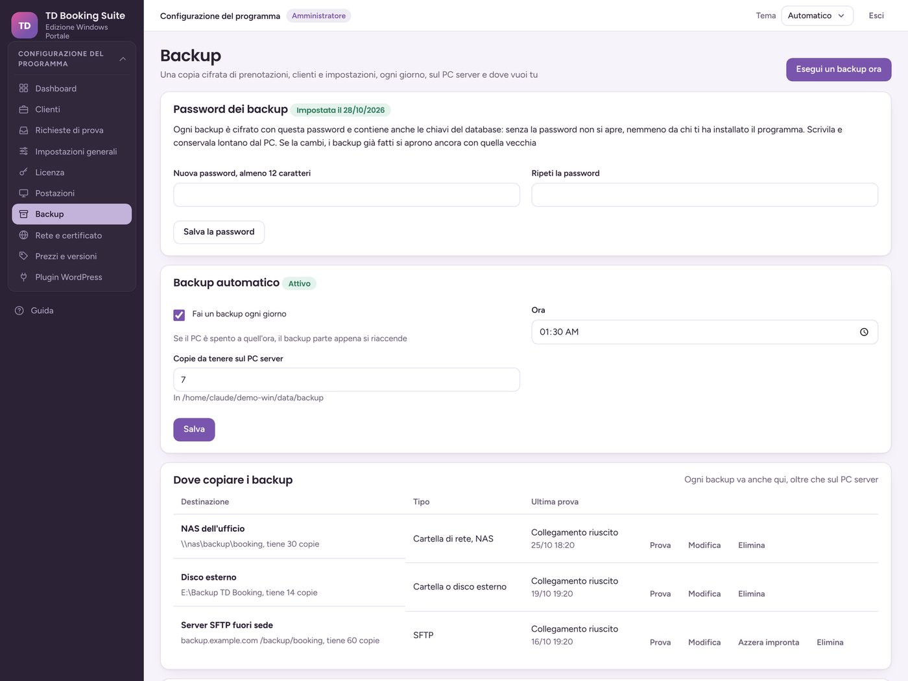
Backup: password, orario, copie, destinazioni e storico.
Ogni backup contiene database, chiavi, licenza e codice installazione, cifrati con AES-256. Se un backup non riesce o i backup sono spenti, l'amministratore lo vede in cima alle pagine. Con FTPS e SFTP il programma ricorda il server al primo collegamento e si rifiuta di mandare la password se poi cambia.
Ripristino
Sul PC con il server: menu Start, TD Booking Suite, Ripristina backup.
Scegli il file .tdbk e scrivi la password dei backup. Il programma si ferma un minuto, rimette i dati e riparte. Il database di prima resta da parte, con la data nel nome.
Su un PC nuovo: installa prima l'MSI, poi ripristina, poi chiedi la licenza con il nuovo codice installazione.
12La licenza
Tipo
Attività
Postazioni in rete
Un PC solo
1
nessuna
Server con postazioni
1
quante ne dice la licenza, oltre al PC server
Portale, più attività
2 o più
quante ne dice la licenza
La licenza vale per il codice installazione che vedi nella pagina Licenza. Il codice dipende da questa installazione e da questo PC: copiando i dati su un altro PC il codice cambia.
Per cambiare postazioni, attività o scadenza Tastiere Digitali ti manda una licenza nuova: la incolli al posto della vecchia, senza perdere niente.
Se le attività sono più di quelle della licenza, le ultime create restano chiuse finché la licenza non le comprende; i dati restano e sono nei backup.
Dopo la prova, o alla scadenza
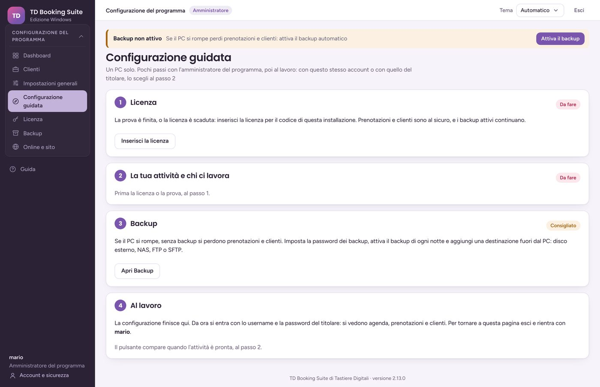
Senza licenza: restano aperte solo licenza, backup e configurazione guidata. Prenotazioni e clienti sono al sicuro.
La data del PCProva e scadenza si contano dall'ultimo giorno in cui il programma ha lavorato: spostare indietro la data di Windows non le allunga. Tieni la data e l'ora di Windows giuste.
13Se qualcosa non va
Cosa succede
Cosa fare
Password dimenticata, dell'amministratore o di chiunque
Sul PC con il server: menu Start, TD Booking Suite, Recupera accesso. Serve un account amministratore di Windows. Scrivi username o email: si apre la pagina per scegliere la password nuova, valida 24 ore. Azzera anche Authenticator e passkey, e resta scritto nel Registro attività.
Il primo avvio chiede un codice
Menu Start, TD Booking Suite, Codice del primo avvio, come amministratore di Windows.
Una persona ha dimenticato la password
L'amministratore del programma, da Persone e permessi, preme Ripristina password: un link nuovo, per email o, se la persona non ha l'email, sullo schermo da consegnare a mano.
La postazione dice che non è registrata
Sul server, Postazioni, Genera il codice, e scrivilo sulla postazione entro 15 minuti.
La postazione avvisa che il certificato del server è cambiato
Se lo hai cambiato tu (nuovo certificato in Rete e certificato), confronta l'impronta con quella della pagina Postazioni del server e accettalo. Altrimenti non accettarlo e controlla la rete.
Il programma è lento o si ferma per qualche secondo a ogni salvataggio
Spesso è l'antivirus che controlla il database a ogni scrittura. In Sicurezza di Windows › Protezione da virus e minacce › Gestisci impostazioni › Esclusioni aggiungi le cartelle C:\ProgramData\TD Booking Suite e C:\Program Files\TD Booking Suite (serve un amministratore). Se succede ancora, chiama l'assistenza con le ultime righe di C:\ProgramData\TD Booking Suite\log\TDBookingWeb.err.log.
Sul PC con il server la finestra avvisa che il certificato è cambiato
Ripara l'installazione: Impostazioni › App › App installate › TD Booking Suite › Modifica › Ripara (serve un amministratore), poi riapri il programma. Le postazioni chiedono una volta di confermare la nuova impronta.
"Username già usato"
Lo username è di una persona che lavora in un'altra attività: scegline un altro, oppure scrivi l'email di quella persona se vuoi proprio lei.
La data del PC risulta indietro
Correggi data e ora di Windows. Prova e scadenza si contano comunque dall'ultimo uso.
"TD Booking Suite è stato modificato"
Qualcuno ha toccato i file del programma: reinstalla l'MSI sopra. I dati restano.
Il server non risponde e serve l'agenda
Nella pagina Il server non risponde premi Apri la copia dell'agenda (sola lettura): è il foglio di oggi e di domani salvato dalla finestra (capitolo 9). Sul PC server il pulsante compare dopo i primi due minuti dall'avvio.
La copia dell'agenda non si apre
Il file non si decifra, per esempio perché il profilo di Windows è stato copiato su un altro PC o il file è rovinato. Si rifà da solo appena il server risponde.
Un backup non riesce
In Backup, premi Prova sulla destinazione e leggi l'esito: disco staccato, password del NAS cambiata, server non raggiungibile.
Prova collegamento: la cassa non risponde
Cassa accesa e nella stessa rete del PC con il programma? L'indirizzo IP è ancora quello del menu della cassa (RCH: SRV › Connettività › Ethernet, con il web server acceso)? Via USB, la porta COM è quella di Gestione dispositivi? Se l'IP cambia ogni tanto, chiedi al tecnico un indirizzo fisso.
Uno scontrino è «Non emesso» o «Da verificare»
Non emesso: leggi il motivo, sistema la cassa e premi Riprova. Da verificare: guarda la cassa, poi È uscito oppure Non è uscito, rimanda (capitolo 8).
Sito con il PC spento: «il sito non riconosce la chiave»
Genera una chiave nuova nel programma e incollala nel plugin. Controlla anche data e ora di Windows: se sono sbagliate di più di 5 minuti il sito rifiuta la chiamata.
Sito con il PC spento: «sito non raggiungibile» o «nel sito manca il plugin»
Indirizzo del sito scritto male, sito fermo o PC senza Internet; oppure il plugin non è attivo, la chiave non è nel plugin, un plugin di sicurezza blocca /wp-json/ o in WordPress i permalink sono su «Semplice».
Il modulo nel sito dice «Pagina scaduta» o mostra orari vecchi
La pagina è nella cache del server: escludila, come la pagina dell'agenda riservata.
Non compare «È disponibile la versione…»
In Licenza › Aggiornamenti guarda Versioni nuove (forse è Spento) e l'esito dell'ultimo controllo.
14Aggiornare, cambiare tipo, disinstallare
Aggiornamenti proposti dal programma
Dopo l'avvio e una volta al giorno il programma guarda se c'è una versione nuova. Se c'è, in alto compare «È disponibile la versione…» con Aggiorna ora e Cosa cambia. Lo vedono l'amministratore del programma e il titolare. Niente si installa da solo.
Scegli un momento senza clienti: durante l'aggiornamento il programma si chiude per qualche minuto.
Premi Aggiorna ora. Il programma scarica l'MSI, controlla che sia quello giusto e chiede la conferma di Windows: rispondi Sì.
Il programma riparte da solo. Prenotazioni, clienti e impostazioni restano; prima di toccare il database l'installer ne fa una copia.
Con Server con postazioni aggiorna prima il server: dopo, l'avviso compare anche sulle postazioni, e lì si preme di nuovo Aggiorna ora.
Spegnere l'avviso: Licenza › Aggiornamenti, in Versioni nuove scegli Spento e premi Salva e controlla ora (solo l'amministratore del programma). Lì vedi anche la versione installata e com'è andato l'ultimo controllo; se dice che GitHub non si raggiunge, il PC non ha Internet o un firewall blocca github.com. Con l'avviso spento si aggiorna aprendo l'MSI nuovo, come qui sotto.
A mano, cambiare tipo, disinstallare
Aggiornare: apri l'MSI nuovo sopra quello vecchio. Tipo, porta, database e dati restano. Prima di aggiornare l'installer salva una copia del database in backup\prima-dell-aggiornamento.dump; se l'aggiornamento non riesce, Windows rimette la versione di prima.
Cambiare tipo (per esempio da Un PC solo a Server con postazioni): apri di nuovo l'MSI, oppure Impostazioni di Windows › App › TD Booking Suite › Modifica, scegli di cambiare l'installazione e il tipo nuovo. I dati restano.
Disinstallare: toglie programma e servizi ma lascia i dati in C:\ProgramData\TD Booking Suite. Per cancellarli davvero elimina quella cartella.
Reinstallare dopo averlo tolto: se l'installer trova i dati di prima, dopo il tipo chiede cosa farne. Usa i dati di prima, già scelto, riparte da dove era, con l'amministratore di allora. Ricomincia da zero dà un programma vuoto e al primo avvio crei l'amministratore: i dati di prima non si cancellano, vanno interi in C:\ProgramData\TD Booking Suite (dati del giorno e ora). Licenza, prova, indirizzi, porta e certificato restano. Un aggiornamento non lo chiede. Da zero anche senza disinstallare: PowerShell come amministratore, powershell -ExecutionPolicy Bypass -File "C:\Program Files\TD Booking Suite\server\script\setup-server.ps1" -Ricomincia 1.
15Per il tecnico
Installazione da riga di comando
rem Un PC solo
msiexec /i TD-Booking-Suite-{{VERSION}}.msi MODALITA=standalone /qn
rem Server con postazioni, con porta e indirizzi
msiexec /i TD-Booking-Suite-{{VERSION}}.msi MODALITA=server PORTA=8443 INDIRIZZO=https://ufficio-pc:8443 ALTRI_INDIRIZZI=192.168.1.10 /qn
rem Solo postazione
msiexec /i TD-Booking-Suite-{{VERSION}}.msi ADDLOCAL=Postazione /qn
Senza MODALITA l'installazione mantiene il tipo che il PC aveva. Un PC nuovo parte come Un PC solo, a meno che si diano INDIRIZZO o ALTRI_INDIRIZZI, o che ci siano già i dati di un server.
Cosa c'è sul PC con il server
C:\Program Files\TD Booking Suite\server
Python, il programma (la parte Windows compilata in codice nativo), PostgreSQL 17, gli script
C:\Program Files\TD Booking Suite\postazione
la finestra del programma (WebView2)
C:\ProgramData\TD Booking Suite
configurazione, database, licenza, certificati, backup, log: la leggono solo Windows, gli amministratori e i servizi
servizio TDBookingDB
PostgreSQL, solo su 127.0.0.1, porta 55432
servizio TDBookingWeb
il programma in HTTPS, porta 8443 (con Un PC solo solo su 127.0.0.1)
servizio TDBookingWorker
email, promemoria, avvisi della lista d'attesa, riepilogo serale, pulizia dei dati scaduti una volta al giorno e backup
Ogni servizio gira con un suo account virtuale di Windows (NT SERVICE\…). Il servizio web non legge la password del proprietario del database. Il firewall apre la porta solo con Server con postazioni, sulle reti private e di dominio.
Una cartella dati o una cartella condivisa create prima dell'installazione da un utente normale non vengono usate: l'installazione le mette da parte, con .non-fidata e la data nel nome, e ne crea di nuove.